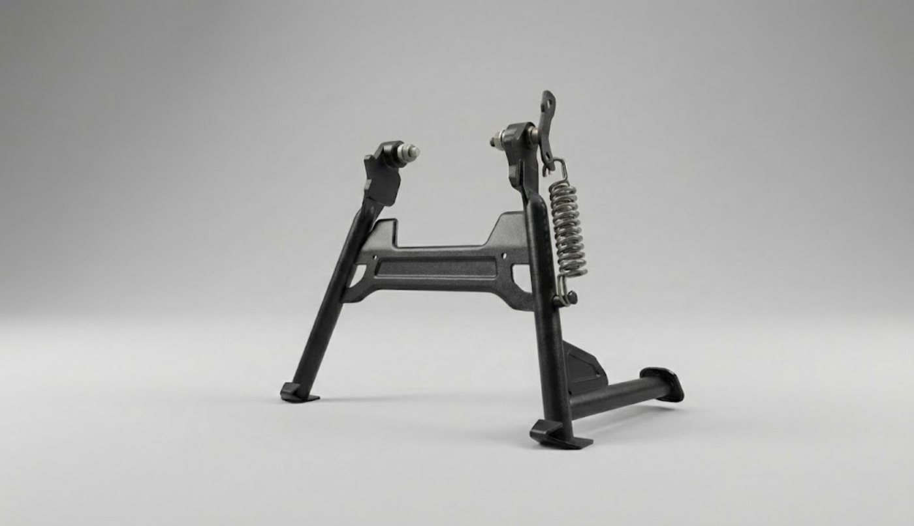
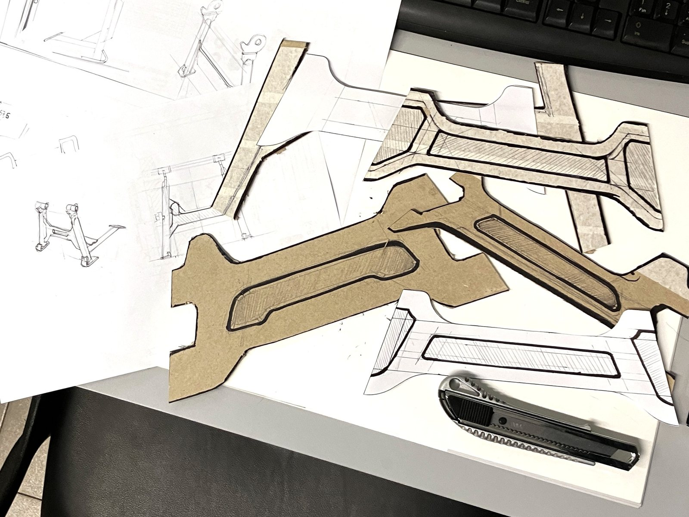
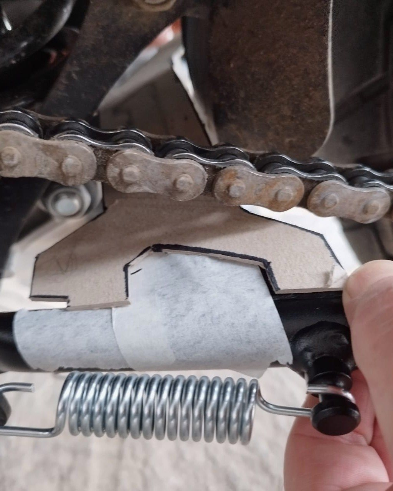
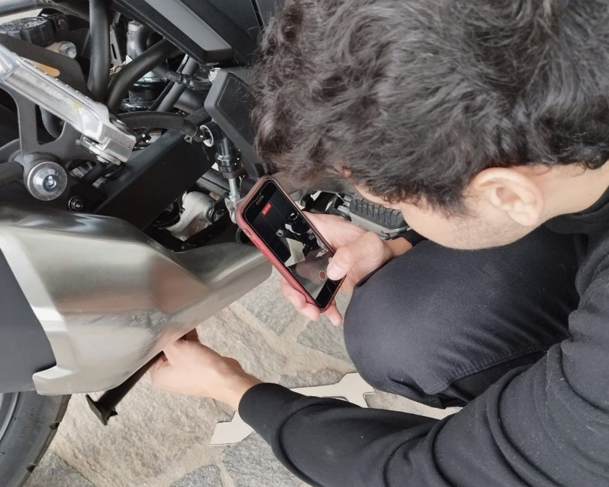
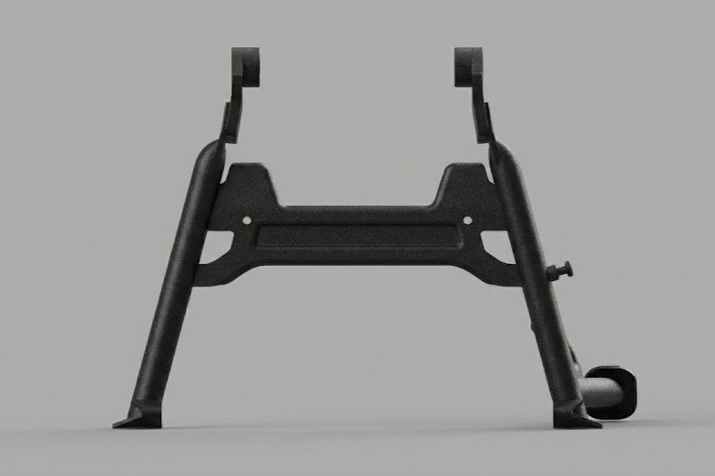
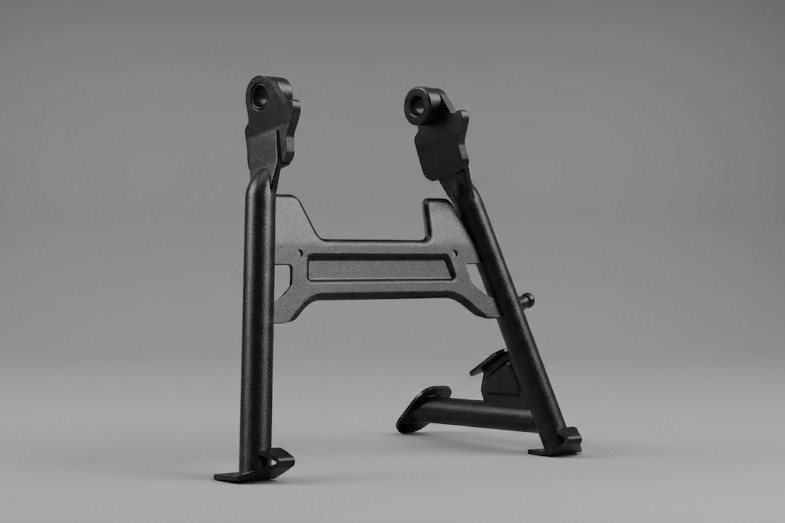
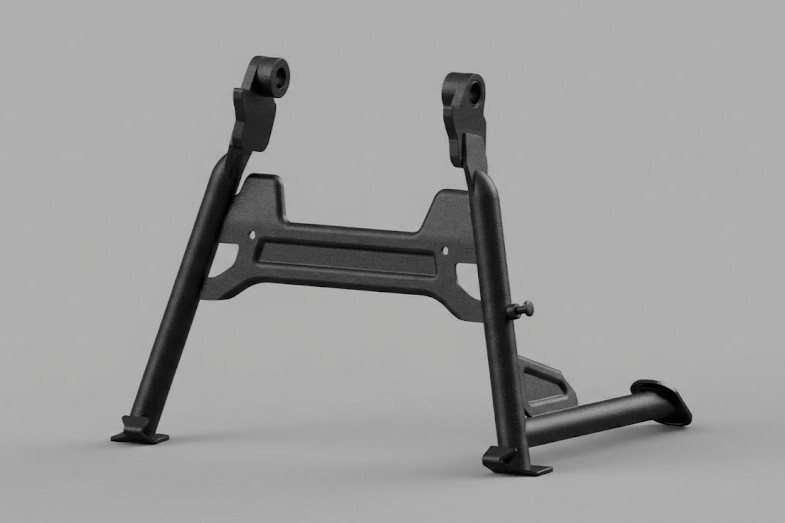

Kawasaki · Rediseño de accesorioKawasaki · Accessory redesign
Caballete central Versys 300Versys 300 center stand
Rediseño del caballete central de la Kawasaki Versys 300 para hacerlo más eficiente estructuralmente y más fácil de fabricar. El travesaño tubular original se reemplaza por una pieza de acero estampado.
Redesign of the Kawasaki Versys 300 center stand to make it more structurally efficient and easier to manufacture. The original tubular cross member is replaced by a stamped steel part.
01
Búsqueda de variantesExploring variants



02
CAD definitivoFinal CAD
03
Renders para visualizaciónVisualization renders


